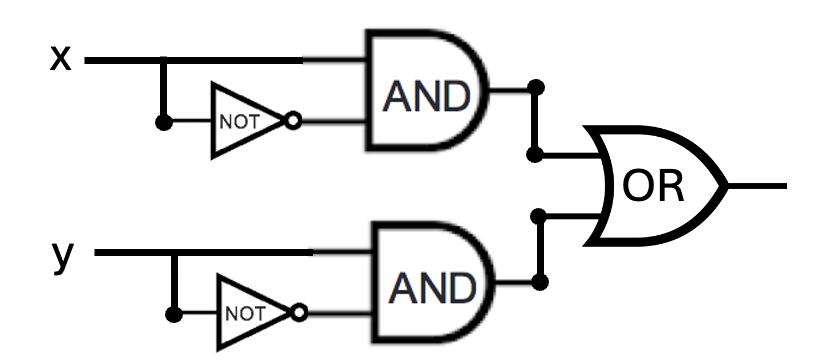
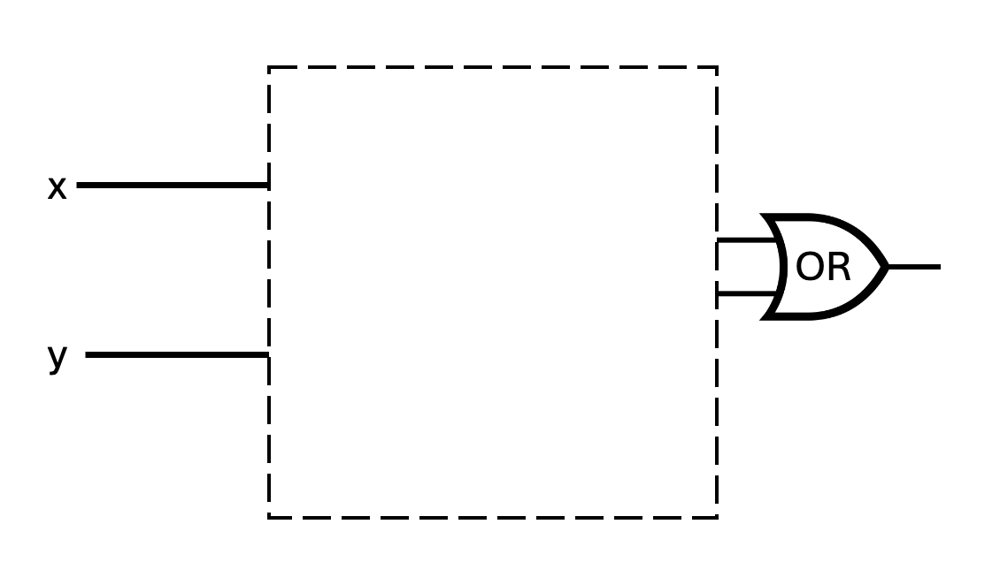
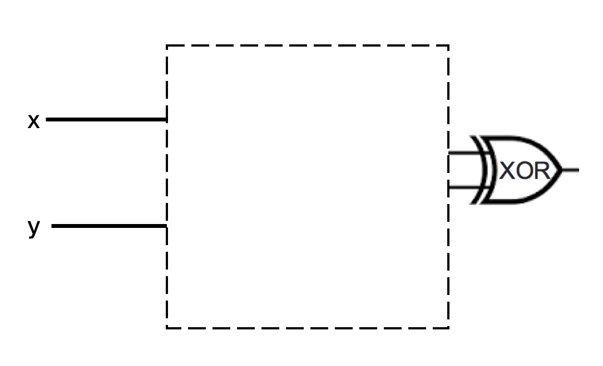

Due: 4/23/24 at 5pm (no penalty late submission until 8am next morning)
In this assignment, you will consider how circuits and logic can be used to represent mathematical claims. You will use propositional operators to express and evaluate these claims.
Relevant class material: Week 2 and Week 3.
You will submit this assignment via Gradescope (https://www.gradescope.com) in the assignment called “hw3-circuits-and-logic”.
For all HW assignments: These homework assignments may be done individually or in groups of up to 3 students. Please ensure your name(s) and PID(s) are clearly visible on the first page of your homework submission, start each question on a new page, and upload the PDF to Gradescope. If you’re working in a group, submit only one submission per group: one partner uploads the submission through their Gradescope account and then adds the other group member(s) to the Gradescope submission by selecting their name(s) in the “Add Group Members” dialog box. You will need to re-add your group member(s) every time you resubmit a new version of your assignment.
Each homework question will be graded either for correctness (including clear and precise explanations and justifications of all answers) or fair effort completeness. You may collaborate on “graded for correctness” questions only with CSE 20 students in your group; if your group has questions about a problem, you may ask in drop-in help hours or post a private post (visible only to the Instructors) on Piazza. For “graded for completeness” questions: collaboration is allowed with any CSE 20 students this quarter; if your group has questions about a problem, you may ask in drop-in help hours or post a public post on Piazza.
All submitted homework for this class must be typed. You can use a word processing editor if you like (Microsoft Word, Open Office, Notepad, Vim, Google Docs, etc.) but you might find it useful to take this opportunity to learn LaTeX. LaTeX is a markup language used widely in computer science and mathematics. The homework assignments are typed using LaTeX and you can use the source files as templates for typesetting your solutions.
Integrity reminders
Problems should be solved together, not divided up between the partners. The homework is designed to give you practice with the main concepts and techniques of the course, while getting to know and learn from your classmates.
You may not collaborate on homework questions graded for correctness with anyone other than your group members. You may ask questions about the homework in office hours (of the instructor, TAs, and/or tutors) and on Piazza (as private notes viewable only to the Instructors). You cannot use any online resources about the course content other than the class material from this quarter – this is primarily to ensure that we all use consistent notation and definitions (aligned with the textbook) and also to protect the learning experience you will have when the ‘aha’ moments of solving the problem authentically happen.
Do not share written solutions or partial solutions for homework with other students in the class who are not in your group. Doing so would dilute their learning experience and detract from their success in the class.
Assigned questions
Fixed-width addition.
(Graded for completeness) 1 Choose example width \(5\) first summand and width \(5\) second summand so that in the binary fixed-width addition (adding one bit at time, using the usual column-by-column and carry arithmetic, and ignoring the carry from the leftmost column), the example satisfies all three conditions below simultaneously
When interpreting each of the summands and the result in binary fixed-width 5, the result represents the actual value of the sum of the summands and
when interpreting each of the summands and the sum in sign-magnitude width 5, the result represents the actual value of the sum of the summands and
when interpreting each of the summands and the sum in 2s complement width 5, the result represents the actual value of the sum of the summands.
(Graded for correctness) 2 Choose an example width \(5\) first summand and second summand so that in the binary fixed-width addition (adding one bit at time, using the usual column-by-column and carry arithmetic, and ignoring the carry from the leftmost column), the example satisfies all three conditions below simultaneously
When interpreting each of the summands and the result in binary fixed-width 5, the result does not represent the actual value of the sum of the summands and
when interpreting each of the summands and the sum in sign-magnitude width 5, the result does not represents the actual value of the sum of the summands and
when interpreting each of the summands and the sum in 2s complement width 5, the result represents the actual value of the sum of the summands.
A complete solution will clearly specify each summand and the result of binary fixed-width addition with this choice of summands; will specify the value of each summand and the result for binary fixed-width 5, sign-magnitude width 5, and 2s complement width 5 (and include calculations connecting with the definitions of these representations to explain these values); and a conclusion connecting the calculations to the properties laid out in the question.
Circuits.
(Graded for completeness) Consider the circuit below with inputs \(x\) and \(y\). Identify a pair of gates that could be switched without changing the input-output table of the circuit. If you do, write out the input-output table that results, and briefly explain why this choice of gates works. If there is no such pair of gates, explain why not with reference to the definitions of the logic gates.

(Graded for correctness) Is there a way to fill in the blank portion of the two logic circuits below *with the same gates connected in the same way* so that the resulting circuits have the same input-output value *even though* one uses an OR gate at the end and the other uses an XOR gate? If so, design the circuit that would be used, write out the input-output table that results, and briefly explain why your design works. If not, explain why not with reference to the definitions of the logic gates.
2


Compound propositions. The set of strings of length \(4\) whose characters are \(0\)s or \(1\)s is the result of four successive set-wise concatenations: \(\{0,1\} \circ \{0,1\} \circ \{0,1\}\circ \{0,1\}\). Let’s call this set \(X_4\). Consider the function \(f: X_4 \to X_4\) defined by \[f(x) = \begin{cases} y &\text{when $(x)_{2,4} < 15$ and $(y)_{2,4} = (x)_{2,4} + 1$}\\ 1111 &\text{when $x = 1111$} \end{cases}\] for each \(x \in X_4\). In other words, we can describe the function as: \(f\) takes a string, interprets it as the binary fixed-width \(4\) expansion of an integer, and then adds \(1\) to that integer (unless \(x\) is already representing the greatest integer that can be represented in binary fixed-width \(4\)) and outputs the binary fixed-width \(4\) expansion of the result.
(Graded for completeness) Fill in the blanks in the following input-output definition table with four inputs \(x_3\), \(x_2\), \(x_1\), \(x_0\) and four outputs \(y_3\), \(y_2\), \(y_1\), \(y_0\) so that \(f(x_3x_2x_1x_0) = y_3y_2y_1y_0\).
| \(x_3\) | \(x_2\) | \(x_1\) | \(x_0\) | \(y_3\) | \(y_2\) | \(y_1\) | \(y_0\) |
|---|---|---|---|---|---|---|---|
| \(1\) | \(1\) | \(1\) | \(1\) | \(1\) | \(1\) | BLANK1 | \(1\) |
| \(1\) | \(1\) | \(1\) | \(0\) | \(1\) | \(1\) | \(1\) | \(1\) |
| \(1\) | \(1\) | \(0\) | \(1\) | \(1\) | BLANK2 | \(1\) | \(0\) |
| \(1\) | \(1\) | \(0\) | \(0\) | \(1\) | \(1\) | \(0\) | \(1\) |
| \(1\) | \(0\) | \(1\) | \(1\) | \(1\) | \(1\) | \(0\) | \(0\) |
| \(1\) | \(0\) | \(1\) | \(0\) | \(1\) | \(0\) | \(1\) | \(1\) |
| \(1\) | \(0\) | \(0\) | \(1\) | \(1\) | \(0\) | \(1\) | \(0\) |
| \(1\) | \(0\) | \(0\) | \(0\) | BLANK3 | \(0\) | \(0\) | \(1\) |
| \(0\) | \(1\) | \(1\) | \(1\) | \(1\) | \(0\) | \(0\) | \(0\) |
| \(0\) | \(1\) | \(1\) | \(0\) | \(0\) | \(1\) | \(1\) | BLANK4 |
| \(0\) | \(1\) | \(0\) | \(1\) | \(0\) | \(1\) | \(1\) | BLANK5 |
| \(0\) | \(1\) | \(0\) | \(0\) | \(0\) | \(1\) | \(0\) | \(1\) |
| \(0\) | \(0\) | \(1\) | \(1\) | \(0\) | \(1\) | \(0\) | \(0\) |
| \(0\) | \(0\) | \(1\) | \(0\) | \(0\) | \(0\) | \(1\) | \(1\) |
| \(0\) | \(0\) | \(0\) | \(1\) | \(0\) | \(0\) | \(1\) | \(0\) |
| \(0\) | \(0\) | \(0\) | \(0\) | BLANK6 | \(0\) | \(0\) | \(1\) |
(Graded for correctness) Construct an expression (as a compound proposition) for \(y_0\) in terms of the inputs \(x_3, x_2, x_1, x_0\). Justify your expression by referring to the definition of the logic gates XOR, AND, OR, NOT and the definition of the function \(f\). Hint: our work on the half-adder might be helpful.
(Graded for correctness) Construct an expression (as a compound proposition) for \(y_1\) in terms of the inputs \(x_3, x_2, x_1, x_0\). Justify your expression by referring to the definition of the logic gates XOR, AND, OR, NOT and the definition of the function \(f\). Hint: our work on the half-adder might be helpful.
(Graded for completeness) Draw a combinatorial circuit corresponding to these compound propositions. Remember that the symbols for the inputs will be on the left-hand-side and the symbol for the outputs \(y_0\) and \(y_1\) will be on the right-hand side. Use gates (draw the appropriate shapes and add labels for clarity) and wires to connect the inputs appropriately to give the output.
(Graded for completeness) Construct expressions (as a compound propositions) for \(y_2\) and \(y_3\) in terms of the inputs \(x_3, x_2, x_1, x_0\). Are these similar to the expressions for \(y_0\) and \(y_1\)?
Logical Equivalence. Imagine a friend suggests the following argument to you: “The compound proposition \[(x \lor y) \land z\] is logically equivalent to \[x \lor (y \land z)\] because I can transform one to the other using the following sequence of logical equivalences: \[(x \lor y) \land z \equiv (x \lor (y \land y)) \land z \equiv x \lor ( (y \lor y) \land z) \equiv x \lor (y \land z)\] because \(y\) is logically equivalent to both \(y \land y\) and to \(y \lor y\)".
(Graded for correctness) Prove to your friend that they made a mistake by giving a truth assignment to the propositional variables \(x,y,z\) so that the two compound propositions \((x \lor y) \land z\) and \(x \lor (y \land z)\) have different truth values. Justify your choice by evaluating these compound propositions using the definitions of the logical connectives and include enough intermediate steps so that a student in CSE 20 who may be struggling with the material can still follow along with your reasoning.
(Graded for completeness) Help your friend find the problem in their argument by pointing out which step(s) were incorrect.
(Graded for completeness) Give three different compound propositions that are actually logically equivalent to (and not the same as) \[(x \lor y) \land z\] Justify each one of these logical equivalences either by applying a sequence of logical equivalences or using a truth table. Notice that you can use other logical operators (e.g. \(\lnot, \lor, \land, \oplus, \to, \leftrightarrow\)) when constructing your compound propositions.
Bonus; not for credit (do not hand in): How would you translate each of the equivalent compound propositions in English? Does doing so help illustrate why they are equivalent?
This means you will get full credit so long as your submission demonstrates honest effort to answer the question. You will not be penalized for incorrect answers. To demonstrate your honest effort in answering the question, we expect you to include your attempt to answer *each* part of the question. If you get stuck with your attempt, you can still demonstrate your effort by explaining where you got stuck and what you did to try to get unstuck.↩︎
This means your solution will be evaluated not only on the correctness of your answers, but on your ability to present your ideas clearly and logically. You should explain how you arrived at your conclusions, using mathematically sound reasoning. Whether you use formal proof techniques or write a more informal argument for why something is true, your answers should always be well-supported. Your goal should be to convince the reader that your results and methods are sound.↩︎